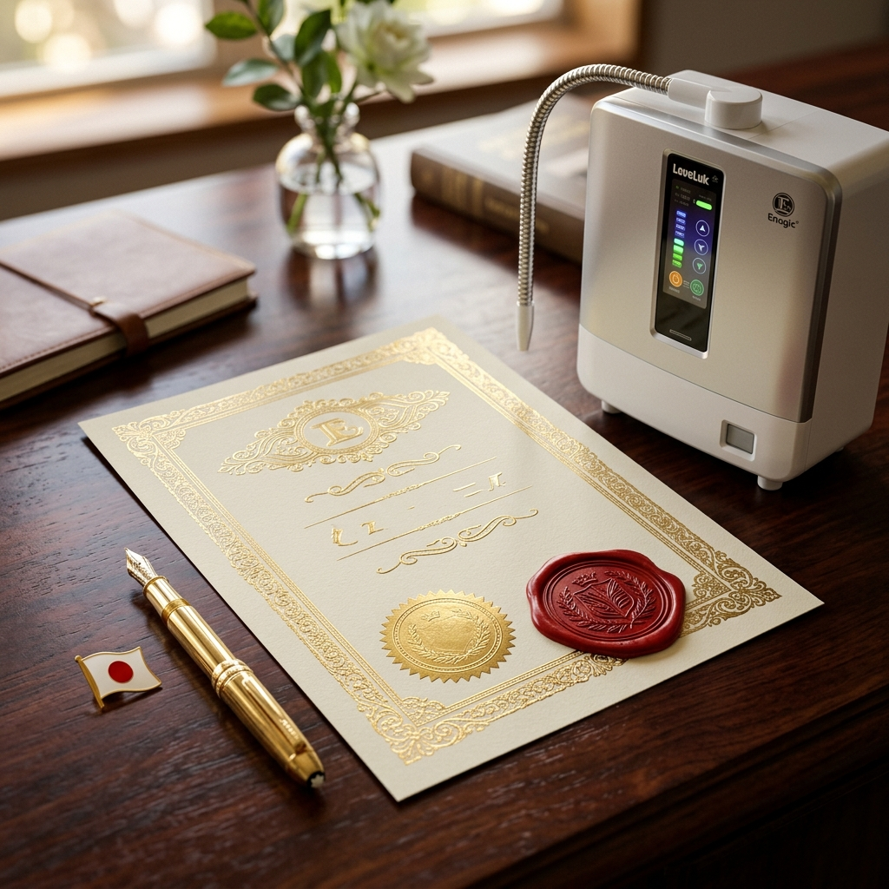

Detrás de cada dispositivo Kangen hay más de 48 años de ingeniería japonesa, certificaciones de grado médico y el respaldo de profesionales como el Dr. Michael Carpenter. Descubre por qué esto no es un producto más.
El Dr. Michael Carpenter es uno de los profesionales médicos más reconocidos en el campo de la medicina preventiva basada en la hidratación funcional. Tras décadas de práctica clínica, se convirtió en un defensor público de la tecnología de ionización de agua tras observar resultados consistentes en sus propios pacientes.
Su enfoque no se centra en promesas milagrosas, sino en la evidencia empírica y la fisiología básica: un cuerpo correctamente hidratado, con un pH equilibrado y protegido contra el estrés oxidativo, tiene una capacidad de auto-regeneración significativamente superior.
Llevo más de 20 años investigando el impacto de la calidad del agua en la salud. Lo que he observado con el agua ionizada alcalina rica en hidrógeno molecular va más allá de la hidratación convencional: se trata de una herramienta real de medicina preventiva.
— Dr. Michael CarpenterEl Dr. Carpenter enfatiza que la calidad del agua que consumimos es tan importante como la calidad de los alimentos. Según su experiencia clínica:
Los ionizadores Kangen no son electrodomésticos convencionales. Son dispositivos certificados bajo los estándares más exigentes de la industria médica mundial.

El mercado está inundado de "ionizadores de agua" baratos sin ninguna certificación médica. Estos dispositivos usan placas de malla, menos electrodos y materiales de baja calidad que no garantizan ni la seguridad ni la eficacia del agua producida.
Enagic es una de las únicas empresas en el mundo que fabrica ionizadores de agua certificados como dispositivo médico. Esto significa que cada máquina cumple con estándares de seguridad, pureza y rendimiento comparables a los de equipos hospitalarios.
Invertir en un ionizador sin certificación médica es como comprar un marcapasos sin homologación: puede funcionar, pero nadie te garantiza que sea seguro.
La certificación ISO 13485 garantiza que el sistema de gestión de calidad de Enagic cumple con los requisitos regulatorios para dispositivos médicos. Es la misma certificación exigida para fabricar equipos quirúrgicos, prótesis e instrumentación hospitalaria.
Los dispositivos Enagic están registrados ante la FDA de Estados Unidos (Food and Drug Administration), la agencia reguladora de alimentos y medicamentos más exigente del mundo. Esto les permite su distribución legal como dispositivo de salud en territorio estadounidense.
El Sello de Oro de la WQA certifica que el producto cumple con los estándares de la industria del tratamiento de agua. Verifica la seguridad estructural, la calidad del material y el rendimiento del sistema de filtración y electrólisis.
Los ionizadores Kangen están aprobados como dispositivos médicos por el MHLW (Ministerio de Salud, Trabajo y Bienestar) de Japón desde los años 70. Más de 6.500 médicos japoneses los recomiendan.
A diferencia de competidores que subcontratan, Enagic fabrica sus propios dispositivos en su planta de Osaka, Japón. Control total de calidad desde la materia prima hasta el producto final.
La tecnología Kangen elimina la necesidad de botellas de plástico. Un solo dispositivo puede evitar el consumo de más de 70.000 botellas de plástico durante su vida útil de 15-25 años.
Fundada en 1974 en Japón, Enagic ha dedicado casi medio siglo a una sola misión: fabricar los mejores ionizadores de agua del mundo.
Se establece en Japón con la misión de desarrollar tecnología de ionización de agua de grado médico.
Los ionizadores de agua electrolizada son aprobados como dispositivos médicos por el Ministerio de Salud de Japón (MHLW) para uso en hospitales y clínicas.
Más de 100 hospitales japoneses adoptan la tecnología de agua electrolizada, especialmente el agua ácida pH 2.5 para desinfección y el agua alcalina para rehabilitación.
Enagic abre su sede en Los Ángeles, California, y comienza la distribución global de sus dispositivos.
La planta de fabricación de Osaka obtiene la certificación ISO 13485 para dispositivos médicos, consolidando su estatus de grado clínico.
La Water Quality Association otorga su prestigioso Gold Seal a los ionizadores Enagic, validando la calidad de filtración y purificación.
Se publica el estudio clínico en el J Clin Biochem Nutr demostrando un aumento del 39% en la enzima antioxidante SOD con agua electrolizada. Ver estudio →
Publicación en J Lipid Research mostrando reducción significativa de colesterol LDL y total con agua hidrogenada. Ver estudio →
Enagic opera en más de 100 países con oficinas locales en Japón, EEUU, Europa, Asia, Oceanía, Oriente Medio y África. Más de 6.500 médicos japoneses recomiendan sus dispositivos.
Hay cientos de "ionizadores" baratos en Amazon sin ninguna certificación. Sin ISO 13485, sin registro FDA, sin Gold Seal. Ninguno garantiza la seguridad, el rendimiento ni la durabilidad que ofrece Enagic.
Enagic usa placas sólidas de titanio recubiertas de platino (no malla). Esto garantiza una electrólisis uniforme, un ORP más negativo y una vida útil de 15-25 años sin degradación.
Amortización media: 3-5 años. Después: agua premium gratuita de por vida. Comparado con comprar agua embotellada o filtros por ósmosis que necesitan recambios constantes.